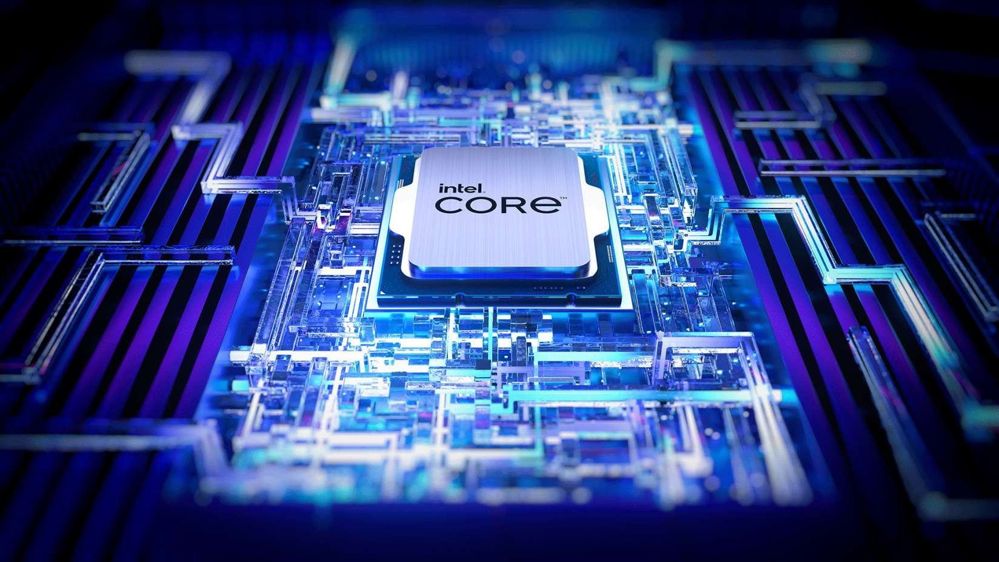

Componentes de Hardware
Estudamos os principais componentes que formam um computador, suas funções e como interagem para processar informações. Cada peça tem um papel crucial no desempenho geral do sistema.

Processador (CPU)
O cérebro do computador, responsável por executar instruções e processar dados. Determina a velocidade geral do sistema.
Núcleos:
4-16
Clock:
3.0-5.0 GHz
Fabricantes:
Intel, AMD

Placa de Vídeo (GPU)
Processa gráficos e imagens, essencial para jogos, edição de vídeo e aplicações de machine learning.
VRAM:
4-24 GB
Fabricantes:
NVIDIA, AMD
Interfaces:
PCIe 3.0/4.0

Memória RAM
Armazena dados temporários para acesso rápido pela CPU. Mais RAM permite multitarefa eficiente.
Capacidade:
8-64 GB
Velocidade:
2400-5600 MHz
Tipo:
DDR4/DDR5